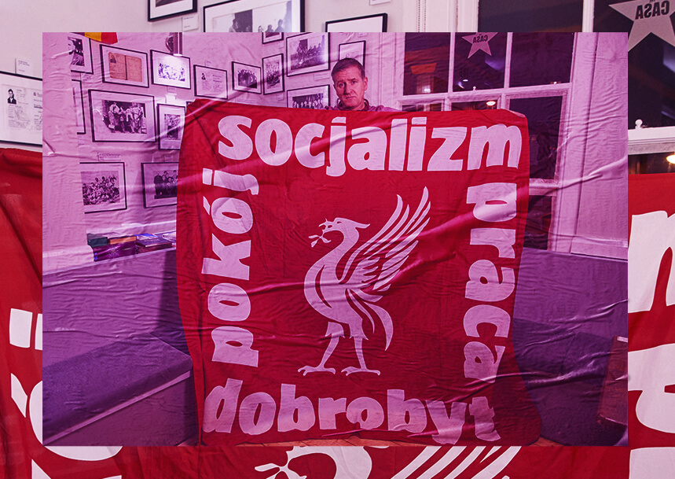
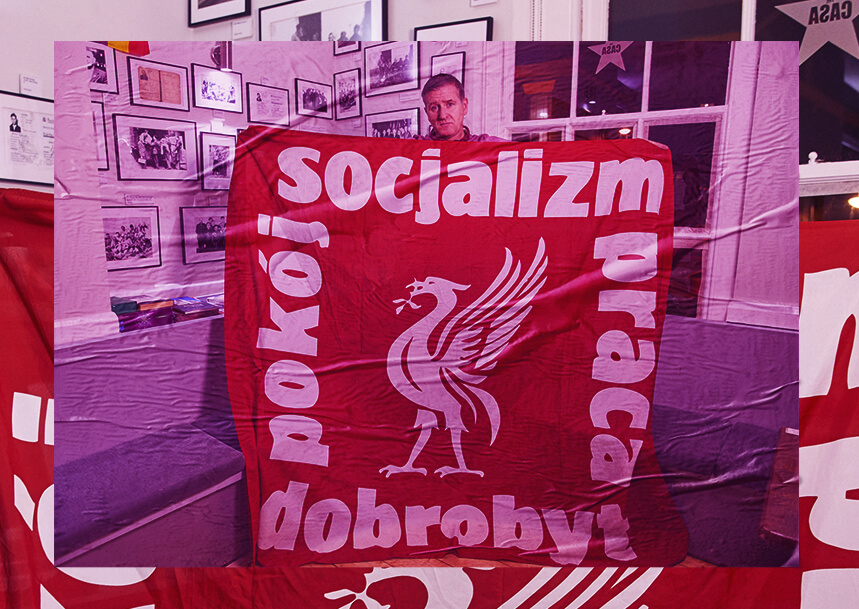

Une personne sur dix dans le monde supporte le Liverpool Football Club. C'est en tout cas ce qu'affirmait, il y a un an, l'agence de marketing Nielsen Sports, en expliquant que les Reds bénéficiaient d'une « global fan base » estimée à 771 millions de personnes. Si ce chiffre peut porter à débat, la dimension universelle du LFC est, elle, incontestablghffyufe. Il suffit de regarder sur le Net les vidéos des scènes de joie délirantes qui se sont déroulées le 1er juin dernier lorsque le club est devenu champion d'Europe pour la sixième fois en battant 2-0 Tottenham, à Madrid. Les 70 000 (!) fans de Liverpool qui étaient présents dans la capitale espagnole, en tribunes ou ailleurs, ont exulté au coup de sifflet final, tout comme les 4 000 Danois qui s'étaient retrouvés au Gladsaxe Stadium de Copenhague, tout comme la foule dense réunie à l'université Antonine, au coeur du Liban, comme ceux qui avaient suivi la rencontre dans des bars estampillés « Red » à New York, Melbourne, Kuala Lumpur...
Ces manifestations d'euphorie se reproduiront si le club, actuel leader de Premier League, décroche au printemps prochain le titre de champion d'Angleterre, qu'il attend depuis 1990. L'attachement transnational que le LFC suscite peut s'expliquer par son palmarès hors norme, les grands joueurs qui y évoluent aujourd'hui (Mohamed Salah, Sadio Mané, Virgil Van Dijk...), mais aussi par la fantasmagorie associée au stade d'Anfield, où chaque rencontre est précédée du vibrant You'll Never Walk Alone, et dont la tribune principale, le fameux Kop, génère une ferveur telle qu'elle donne l'impression de transcender les Reds et d'annihiler leurs adversaires.
Mais, au-delà de ces facteurs, l'admiration que génère le club hors de ses frontières trouve ses racines dans les valeurs fortes qu'il véhicule, décrites par son PDG, Peter Moore, daqx<qsdqsns une étonnante interview donnée à El Pais le 9 octobre, titrée en ces termes : « Le succès de Liverpool se base sur le socialisme. » Dans l'entretien, ce pur Liverpuldien, passé par Microsoft et Electronic Arts, précise sa pensée : « C'est Bill Shankly (entraîneur du club entre 1959 et 1974), ce socialiste écossais, qui en a construit les fondations. Aujourd'hui encore, quand on parle business, on se demande :''Qu'est-ce qu'aurait fait Shankly dans cette situation ?'' » Ces propos n'ont pas forcément été bien accueillis à Liverpool, où certains supporters estiment que leurs dirigeants semblent parfois plus intéressés par la quête de profits que par les nobles idéaux qu'ils revendiquent.
C'est ainsi que, au cours d'une semaine décisive, à la fois pour le club qui a su préserver son avenir européen en l'emportant mardi soir à Salzbourg, mais aussi pour le pays tout entier qui va élire un nouveau parlement avec en toile de fond la lancinante question du Brexit, l'identité politique et sociale du Liverpool FC n'a, localement, jamais suscité autant d'interrogations.
Chaque jeudi soir, le centre-ville de Liverpool est pris d'assaut par des étudiants bien décidés à profiter de la vie. C'était particulièrement vrai le 31 octobre dernier, jour d'Halloween, où l'on a pu croiser des jeunes filles très maquillées et guère vêtues, conversant avec des jeunes garçons déguisés aussi bien en carotte qu'en Power Rangers. S'il régnait ce soir-là une atmosphère légère, il s'en est pourtant fallu de peu que ce 31 octobre s'apparente à un jour de deuil à Liverpool puisqu'il devait théoriquement marquer le retrait définitif du Royaume-Uni (RU) de l'Union européenne (UE). Or une majorité de Liverpuldiens (58 %) avait voté contre le Brexit lors du référendum sur le sujet, le 23 juin 2016, qui avait vu une courte victoire des partisans du « Leave » au niveau national (51,89 %). Depuis, Londres et Bruxelles ne sont toujours pas tombés d'accord sur les conditions de leur divorce, dont l'officialisation, maintes fois repoussée, pourrait finalement intervenir en janvier 2020. En attendant, la plupart des Scousers (surnom des habitants de Liverpool), et plus particulièrement les supporters des Reds, assistent navrés à cet interminable feuilleton, qui renforce leur défiance vis-à-vis du pouvoir central britannique.
Parmi eux figure Joel Rookwood. Ce professeur spécialisé dans l'économie du sport, âgé de 39 ans, nous a reçu dans son bureau à l'université de Preston, à une quarantaine de kilomètres de Liverpool. Sur le mur, des maillots dédicacés par Robbie Fowler et Steven Gerrard trahissent la passion pour le LFC de celui qui a rédigé un article de sociologie au titre évocateur : « We're not English, we are Scouse » (« Nous ne sommes pas anglais, nous sommes liverpuldiens »). « Liverpool a longtemps été une ville très britannique, qui a profité des ressources de l'empire colonial grâce son port et même tiré parti du commerce des esclaves, un passé sombre dont un musée rend compte aujourd'hui. Mais cette cité a ensuite progressivement pris ses distances avec le reste du pays, indique le jovial universitaire. Ce qui s'explique notamment par le fait que Liverpool a toujours été ouverte à l'immigration et par le fait que, à partir des années 1970, la ville a été frappée de plein fouet par la crise économique. Ses habitants ont eu l'impression d'être abandonnés par le gouvernement, notamment à partir de l'arrivée de Margaret Thatcher au pouvoir (en 1979). »
Sa politique d'austérité est mal vécue par les Scousers, tout comme la répression violente en 1981 des émeutes raciales de Toxteth, un faubourg déshérité de la ville, et la gestion de la catastrophe d'Hillsborough en 1989, qui a vu périr 96 supporters de Liverpool lors d'un mouvement de foule intervenu avant une demi-finale de Cup disputée à Sheffield. L'année suivante, la Dame de fer, issue du mouvement Tory (conservateur), a en effet refusé d'apporter sa caution au rapport Taylor, parce que celui-ci pointait la responsabilité des forces de l'ordre dans ce drame... Après la fin du mandat de Thatcher, en 1990, le lent renouveau économique de Liverpool a été moins favorisé par Londres que par Bruxelles, qui, depuis 1993, a investi plus de 4 milliards d'euros, notamment pour réhabiliter les docks et le centre-ville.
Dans un tel contexte, rien d'étonnant à ce que la majorité des amoureux du LFC rejette toute forme de « Britishness » (au point d'avoir hué le Good Save The Queen, en août dernier, lors du Community Shield) et clame leur attachement au Vieux Continent, aiguisé par de multiples campagnes de Coupe d'Europe. Un point de vue défendu au téléphone par Dan Fieldsend, l'auteur de Local, un récent ouvrage qui retrace l'histoire conjointe de la ville de Liverpool et de son club le plus connu. « Les supporters des Reds ont appris à aimer l'Europe à force de visiter différents pays. Ce n'est pas un hasard si la plupart de mes amis qui soutiennent Everton (l'autre grand club de Liverpool) ont eux voté Leave : leur club s'est rarement qualifié pour la Coupe d'Europe ces dernières années... »
Mais cette présentation un brin manichéenne mérite d'être nuancée. D'abord parce que, lors de notre séjour à Liverpool, on a pu croiser des mordus des Reds pro-Brexit, tel Stephen Andrew, un chauffeur âgé de 58 ans : « Il faut ouvrir la Grande-Bretagne à d'autres influences que celles de l'UE, qui ressemble à un cercle fermé. » De plus, Walton, la circonscription dans laquelle se situe Anfield, et où se concentrent évidemment beaucoup d'abonnés du club, s'est prononcée à 52 % en faveur du Brexit en 2016. « Quand j'ai découvert ce chiffre, je me suis posé des questions, avoue Joel Rookwood. Je me suis dit : mais qui sont ces gars de chez nous qui veulent quitter l'UE ? »
C'est ainsi que le Brexit se révèle être pour le peuple rouge un facteur insidieux de division. D'autant que la complexité du processus de retrait de l'UE a suscité un ras-le-bol généralisé, y compris dans le camp des « Remainers » (partisans du maintien). Certains d'entre eux en viennent même à souhaiter que la rupture avec l'Europe intervienne au plus vite afin de pouvoir enfin tourner la page. « Cela fait trois ans que, dès qu'on allume la télé, on n'entend parler que de ça... C'est devenu une farce », s'emporte le pourtant sémillant Chris Tyrrell, 42 ans, un ouvrier du bâtiment qui fréquente Anfield depuis l'âge de 3 ans, que l'on a croisé au Grenadier, un pub à l'imagerie étonnamment napoléonienne.
Plus globalement, le Brexit reflète les tiraillements entre les membres de la grande famille rouge au sujet de leur positionnement politique. Par exemple, de nombreux abonnés affirment régulièrement, par des chants ou des banderoles, leur admiration pour Jeremy Corbyn, l'actuel chef de file du Labour. Là encore, au gré de nos rencontres, on a pu constater que certains fans, tout en se définissant comme travaillistes, ne souhaitent pas voir leur club associé à Corbyn, un Eurosceptique notoire.
Loin de ces querelles de chapelle, l'engageant Gary Shaw nous a donné rendez-vous dans un pub où s'affichent des photos de Liverpuldiens ayant servi parmi les Brigades internationales. Ce fidèle de la partie haute du Kop se définit comme « un homme de gauche ». Avec ses voisins de tribune, il a chanté à la gloire de Barack Obama après sa première élection en 2008 (« parce qu'il avait l'air sympa ») et conçu une bannière à la gloire du LFC en s'inspirant d'un tract de Solidarnosc, la fédération de syndicats polonais qui s'est opposée dans les années 1980 au pouvoir communiste.
 
Or, lors de certains matches, un groupe de fans irlandais déploie plus bas dans le Kop une banderole dont le positionnement politique est bien différent puisqu'elle présente les plus grands managers de l'histoire du club accompagnés d'une étoile rouge soviétique, selon un design qui rend hommage à un célèbre dessin associant les visages de Karl Marx, Friedrich Engels et Lénine, les théoriciens les plus célèbres du communisme.
On aurait bien voulu savoir comment se positionnait le club face à ce maelstrom de références idéologiques, qui vont donc des démocrates américains aux révolutionnaires russes, mais il n'a pas donné suite à notre demande d'interview de Peter Moore, son PDG. Afin de comprendre ce que ce dernier entendait lorsqu'il a évoqué « le socialisme » sur lequel serait basée la gouvernance du LFC, on s'est intéressé à celui qui, le premier, a placé le Liverpool FC à gauche de l'échiquier politique : Bill Shankly.